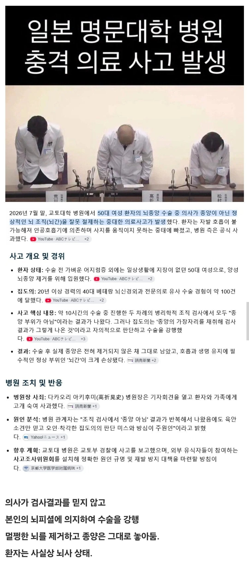

의외로 전문가들 사이에서 잘 발생하는 오류 아님? 대한항공 비슷한일이 있었고 체르노빌도 그랬고
너무 익숙해져서 벌어진 사고냐...
아마 마이크로에 영상 연동하는데 뭔가 어긋나면서 종양이라 생각하고 계속 제거한거 아님?
그냥 사람 뇌를 잘라 죽인거네
이걸 사고로 봐야하나....
뇌간쪽은 호흡중추 관련된 부분이라 걍 죽은거라고 봐야되는거 아니냐?
저런 상태이면 아예 의식이 없고 신체 기능만 돌아갈 뿐인거임? 꿈 속에서 끝없이 미로를 헤맨다거나 그런게 있으려나
자가호흡도 불가능해진거 보면 걍 뇌사나 다름없는듯.....
옛날에 살아남기 시리즈에서 봤는데
뇌가 죽어도 뇌간이 살면 식물인간이고
뇌가 살아도 뇌간이 죽으면 뇌사라던대
뇌사면 의식이 없는 수준이 아니라 아예 죽은거임. 장기만 살아있는 상태고 소생이 아예 불가능한 사망상태라 꿈 꾸고 그런거 없음. 반대로 식물인간은 뇌가 안죽은거라 꿈꿀 수 있을지도?? 식물인간은 모르겠네
끔찍한 소문에 의하면 식물인간중 거의 절반은 감금증후군(의식이라고 판단할 만한 그것은 있으나 외적으로 표현되지 않음. 즉 사람이 자신의 몸에 갇힌다고 감금증후군) 일 수 있대... 본인말고 외부에서는 식물인간하고 감금증후군이 구별이 안된다고...

아냐.....
식물인간=대뇌손상, 인간의 본능적인 생명유지활동(호흡 등)은 대뇌 말고 다른부위에서 조종
뇌사=대뇌 포함 또는 대뇌 제외 다른 생명유지활동부위 손상
뇌간은 호흡이래
뇌간에는 의식의 중추가 있어서 그냥 끝
자국인 데리고 실험함?
진짜 끔찍하지 않냐. 인생이라는게. 허무하네.
아니 의사가 결과를 믿지않으면 어떡해...
미친새끼아녀
그냥 사람 죽여보고싶은데 합법적으로 죽이기 뭐 그런거 아님?
20년경력 베테랑 뇌신경외과 전문의가?
판단미스...맞지?
20년 경력 베테랑이 할 실수라고 보긴 어려울듯
닥터X(맨)
그낭 죽인거네
만화에선 본능적인 직감이 정답이지만 현실에선 통계랑 데이터를 믿는게 옳다고.
아니 무슨 뇌간이 어떻게 생긴지 몰라??
그게 말이되나? 애초에 종양이 뇌간에 있다는 정보가 없었으면 뇌간을 왜 건드려??
그냥 살인해놓고 다른 핑계대는거 아닌가 음습한 일본식
역시 드라마는 드라마인듯 보통 드라마는 저러면 의사가 맞던데 현실은 다르네
몸조심해라
?? 명색이 전문가가 뇌종양이랑 뇌간을 헷갈릴수가 있는거임??

아 씨발 의사나 할걸
한순간의 안일함이 끔찍한 결과가 됐네
예전에 수술 마구 해서 환자 망가뜨리는 일본 외과의사 고발하는 만화를 본 것 같은데...
저쪽도 평소에 대리맡겼냐?
뭐저런 찐빠가 나냐 치매냐?